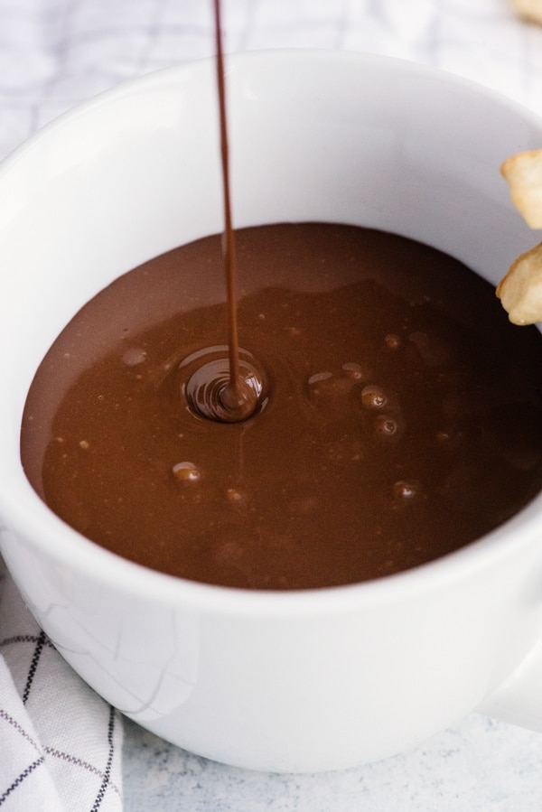

Italian Hot Chocolate
Home

A thick and creamy chocolate concoction with a velvety smooth finish.
A mug full of creamy deliciously Hot Chocolate, made with real chocolate and milk, the ultimate Comfort Food.
Ingredients
- 3.5 ounces Dark Chocolate (good quality) (chopped into small pieces)
- 2 tablespoons sugar
- 2 1/2 tablespoons cocoa unsweetened
- 1 cup + 1 tablespoon milk (2% or whole milk/divided)
- 1 teaspoon corn starch
Steps
- In a small bowl whisk until smooth, 1/4 cup milk and cornstarch set aside.
- Sift the cocoa into a medium bowl then add the sugar and whisk together, set aside.
- In a small/medium pot heat 3/4 cups + 1 tablespoon milk until boiling. Reduce heat to low,
start whisking and add the milk/cornstarch mixture. Next, add the cocoa mixture slowly while continually whisking until smooth.
Add the chopped chocolate and whisk for approximately 3 minutes. Serve immediately. Enjoy!